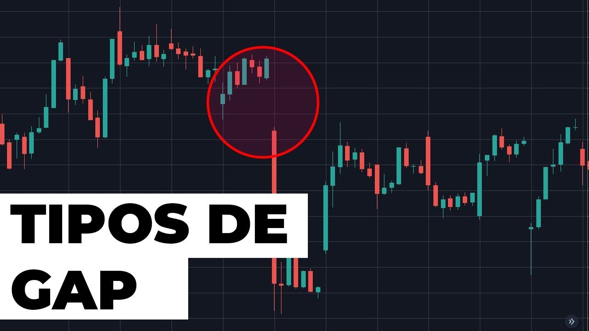
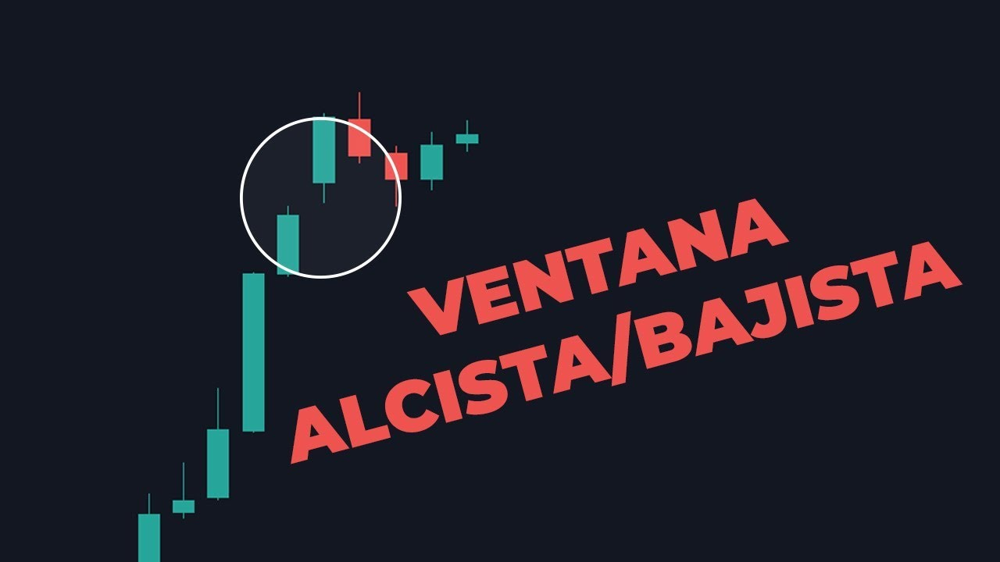
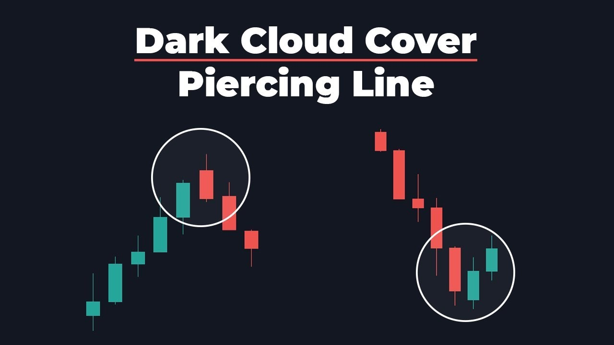
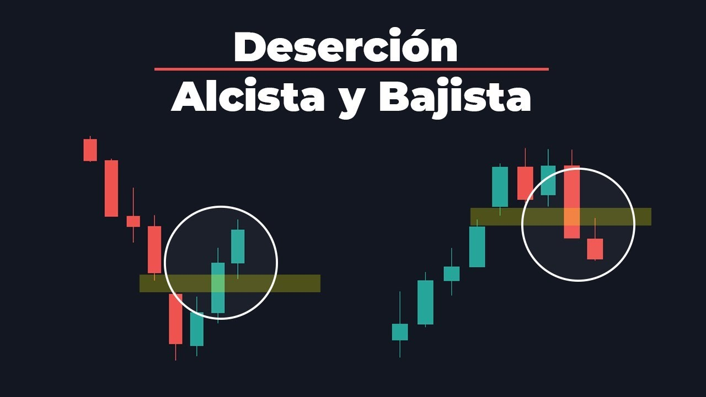

Patrones de velas con GAP
Cuando estamos analizando la gráfica con patrones de velas japonesas, podemos encontrarnos con algunos espacios vacíos entre una vela y otra, estos espacios o «saltos» son conocidos como GAP.
Un Gap no es más que un salto de la vela al momento que cierra y abre una nueva, dejando un espacio vació entre cierre y apertura de la vela.
Este salto puede ser hacia arriba o hacia abajo de manera indiferente. Por ejemplo en el patrón envolvente alcista, el salto de la vela es hacia arriba. Mientras que en un Harami bajista el salto es hacia abajo.
Nostros cómo traders de opciones binarias podemos aprovechar los GAP a nuestro favor, claro, siempre que se den en el contexto adecuado.
Primero es importante que aprendamos a identificar cómo identificar un GAP y cuales tipos hay:

Ahora que podemos identificar los diferentes tipos de GAP en el mercado, podemos operar algunas situaciones que comentaremos a continuación.
La Ventana Alcista y Ventana Bajista, es un patrón de continuidad, tenemos que encontrarlo en una tendencia que presente fuerza.
Después de crearse el Gap debemos esperar que el precio avance un poco y luego tenga un retroceso a la zona del salto, usaremos este espacio cómo una zona de Soporte y Resistencia para operar una continuidad de la tendencia.
Se que todo eso puede parecer un poco confuso, así que en la siguiente clase explico cómo identificar adecuadamente la ventana alcista y cómo operarla:

Ahora veamos un patrón con GAP, pero en esta ocasión , uno de reversión.
Dark Cloud Cover y Piercing Line, estos son patrones que nos indican un cambio de tendencia, es importante que estos se den en tendencias saludables.
El Dark Cloud Cover es un patrón de vela que se da al final de una tendencia alcista y nos muestra la reversión a bajista, es más efectivo si tenemos el apoyo de una resistencia.
El patrón Piercing Line se forma al final de una tendencia bajista y nos indica la perdida de fuerza de los vendedores. Es más efectivo si lo identificamos con el apoyo de un soporte.
En la siguiente clase te explico cómo puedes identificarlo y operarlo:

Y por ultimo veamos lo que es un patrón de continuidad tras una reversión.
Deserción Alcista y Bajista, este patrón aprovecha el gap creado antes de la reversión de la tendencia.
Cómo ya habrás identificado, podemos utilizar estos espacios vacíos dejados por los GAP cómo zonas de soporte y resistencia, y lo que hacemos con la deserción alcista y bajista es exactamente eso.
Tras terminar de formarse la reversión, esperamos que la vela rompa la zona del gap y luego seguimos sus movimientos naturales de impulso y retroceso.
En la siguiente clase explico más a detalle cómo identificarlo y operarlo:

Cómo puedes darte cuenta, podemos aprovechar de múltiples formas estos espacios vacíos, siempre teniendo en consideración el contexto.
Con esta clase finalizamos los patrones de velas japonesas. Te invito a que pases por el RESUMEN DE VELAS JAPONESAS para refrescar todo lo aprendido y realizar algunas actividades.